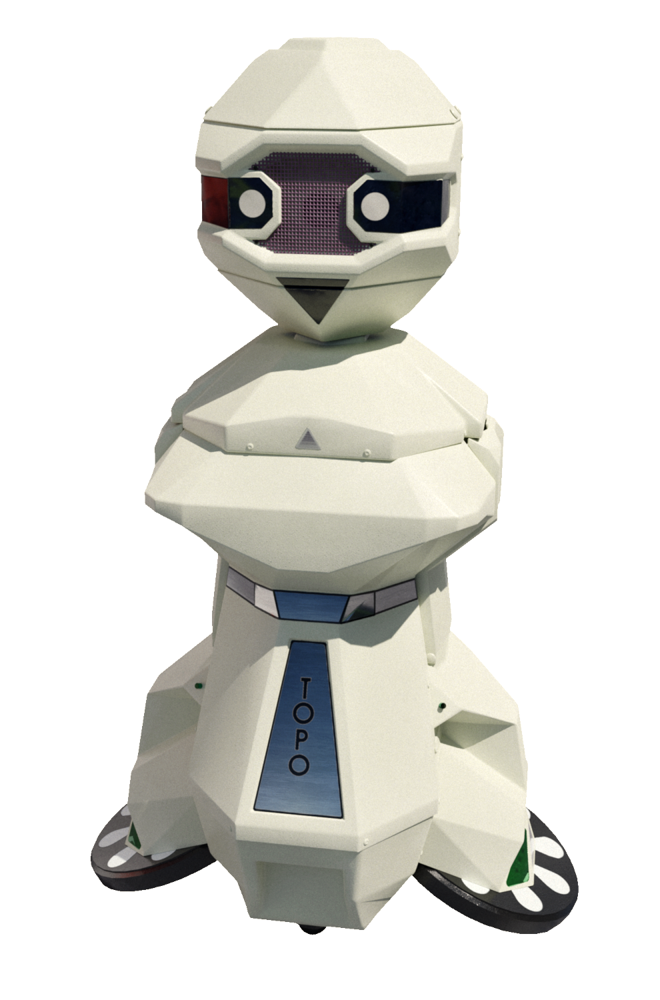

The Body for Your Code
Topo was a 36-inch robot with no sensors. No bump detection, no sonar, no feedback loop. You programmed it from an Apple II and watched it perform — or fail — in physical space, completely blind.
In 1983, Nolan Bushnell — the man who co-founded Atari, invented Pong, and basically drew the blueprint for the video game industry — started a robotics company called Androbot Inc. and shipped a product called Topo.
Topo was a 36½-inch beige plastic humanoid robot with two drive wheels for feet, a set of extendable plastic arms, and wireless communication with an Apple II. You wrote a program in TopoBASIC on the computer, transmitted it by radio or infrared, and watched the robot across the room execute your commands.
Topo had no sensors. None. No bump detection. No light sensors. No sonar. No feedback loop whatsoever.
This was not a cost-cutting compromise that accidentally went too far. It was the product concept.
A body with no senses
Bushnell's vision was not a robot that could navigate your living room or respond to its environment. It was a robot that could be your program in physical space — a pure output device, a body for your code to inhabit. The interaction model was simple and stark: write, transmit, watch. If Topo was supposed to go FORWARD 10 and instead went FORWARD 15, you learned this by watching it overshoot its target. If it walked into a wall, it kept walking, because it couldn't feel the wall.

The magic, such as it was, came from seeing code escape the screen. A program that runs on a monitor stays safely inside the glass. A program that runs inside Topo rolls across the floor, turns a corner, and bumps into the coffee table. The gap between what you wrote and what the robot did was the entire experience — the debugging happened in physical space, with your own eyes as the only feedback channel.
This makes Topo a fascinating counterpoint to the Big Trak, Milton Bradley's 1979 programmable tank that also had no screen but at least had a keypad — you programmed it directly by pressing buttons on its back. Topo went further in one direction and further back in another: the programming environment was on a full computer with a screen and a powerful language, but the robot itself was blinder than the Big Trak. The Big Trak at least had a motor stall sensor buried somewhere in its simple command execution; Topo had nothing but a receiver and a set of motors. It was code, stripped to its physical essence.
The 650-unit run
Topo cost $495 in 1983 — roughly $1,600 today. Androbot shipped about 650 units and sold roughly 120. The company withdrew its initial public offering in November 1983, pivoted to more ambitious robots (BOB, FRED), and folded entirely in 1984. Total lifespan: about 18 months.
There were later revisions: Topo II added the ability to speak (via a Votrax speech synthesizer, the same chip that made the Speak & Spell talk), and Topo III simplified the shell. A Topo IV with actual sensors was planned but never built.
The obvious question is whether sensors would have saved it. They would not have. The problem was that the consumer robotics market of 1983 did not exist yet — a lesson Bushnell learned alongside the dozens of other robotics startups that rose and fell in the same window. The HERO 1 from Heathkit cost more ($1,500 as a kit) and did have sensors, plus a robotic arm, plus a soldering iron was required. It sold better — Heathkit's kit ecosystem had a built-in audience — but it did not create a market either.
What it left behind
What survives today is the idea. Androbot's website from 1983 is preserved on the Internet Archive, complete with the pitch: "If you can dream it, you can program it — and Topo does it." The photographs show a beige plastic humanoid standing next to an Apple II with a radio transmitter sitting on top of the monitor. The dream is visible in the images: programming as choreography, code as a physical presence in the room.
Twenty-six years later, LEGO Mindstorms, Sphero, and a thousand screen-first programmable robots would make that dream cheap and reliable — and they would all give their robots sensors. The dream without sensors was doomed, but that does not make it less beautiful. It was computing reaching out of the screen and into the room, and if the room pushed back, well — that was the point.
The Topo lives in the museum now, where it can keep trying to walk into walls forever.